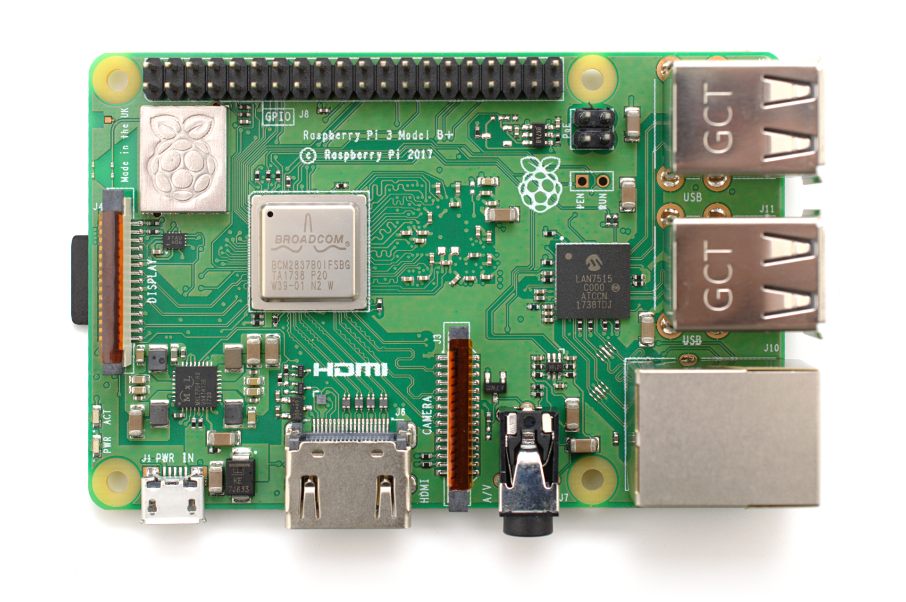

Coding with Kids
Options:
Just logic
JustCode
Just Hardware
Hardware and Code
Key Goals
Options
Raspbery Pi (Family)
Lego Mindstorms
Guidelines:
Content
Workflow
Coding with Kids
Docs
»
Hardware and Code
View page source
Hardware and Code
¶
Key Goals
¶
Options
¶
Raspbery Pi (Family)
¶
This is a Raspberry Pi:

Lego Mindstorms
¶